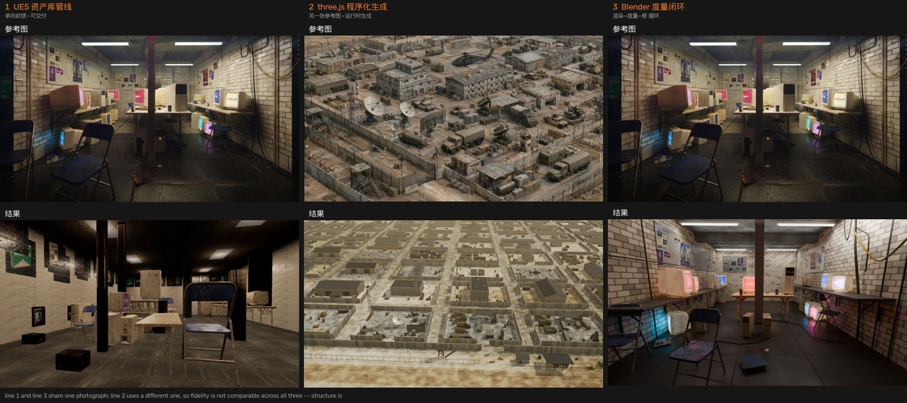

同一个命题的三条互相独立的实现，外加一份把三条放在一起走查的对照文档。

AI 能不能替人搭一个可交付的关卡。设计主线是「AI 出提案，规则做裁决」—— 所有模型输出先过确定性校验与钳制，再由规则链决定摆放。单向前馈，可离线复跑。
一张图能不能变成一类场景的生成器。不匹配资产库，几何与贴图全部由代码 在运行时生成，浏览器里实时跑。八轮目视驱动的迭代。
允许无限循环，还原度的上限在哪。先把「像不像」变成可测量的量， 再让「渲染 → 度量 → 定位病因 → 改」的循环去优化它。九步迭代。
可交互页面：逐条走查三条管线（可按「模型判断 / 确定性算法 / 人工介入」过滤每个环节）、 一个位姿误差放大器，以及对「同样是一个模型，为什么位姿估计和三维语义理解差这么多」的归因。 最直接的证据是：线 1 与线 3 面对同一张图、解出完全一致的内参， 但俯仰差 9.4°、机高差 0.40 m，最终房间宽度差 2.7 倍。
| 线 1 · UE5 | 线 2 · three.js | 线 3 · Blender | |
|---|---|---|---|
| 回答的问题 | 能不能做出可交付的关卡 | 能不能变成一类场景的生成器 | 还原度的上限在哪 |
| 驱动方式 | 单向前馈：AI 出提案，规则裁决 | 目视驱动：挑最刺眼的改 | 度量驱动：先把像不像变成可测量的量 |
| 资产来源 | 39 模块库，四级瀑布匹配 | 代码运行时生成，零外部文件 | 39 模块库 + 参考图矫正回贴 |
| 参考图 | 室内机房 | 沙漠基地（另一张） | 室内机房（同线 1） |
| 运行环境 | UE 5.5 编辑器内嵌 Python | 浏览器 WebGL2 实时 | Blender 4.2 / Cycles 离线 |